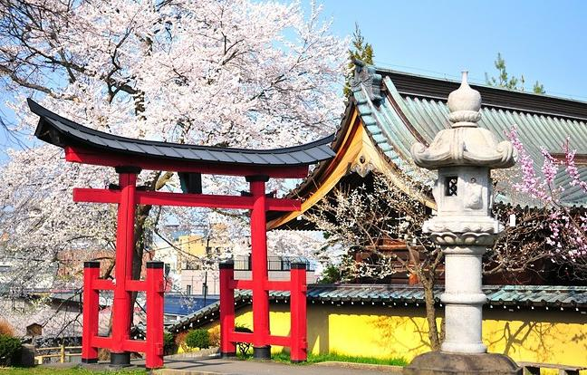

Цікаві факти про Японію
- Цікаві факти про Саке та пиво
- Цікаві факти про Японію: Іноземці
- Цікаві факти про Їжу в Японії
- Цікаві факти про Японію: Гроші
- Цікаві факти про японське Метро
- Сакура
- Цікаві факти про Японію: Чистота
- Цікаві факти про японські Готелі
- Цікаві факти про Транспорт в Японії
- Цікаві факти про Релігію в Японії
Цікаві факти про Саке та пиво
Саке в японському – це будь-який алкоголь взагалі. Якщо у супермаркеті ви просите саке це як в Україні «дайте алкоголь». Якщо вам потрібно саме саке, потрібно просити nihonshu (буквально: японське бухло). Саке це не рисова горілка. У ньому не 40 градусів, а 14-20 як у кріпленого вина. Тільки це й не вино. Гарячим (підігрітим) п’ють погане, дешеве саке. Дороге, гарне саке п’ють охолодженим. Якщо вам потрібна саме рисова горілка (точніше, дистилят), то це слово (shochu). Там міцність вже 25-45 градусів. І вона робиться з рису.
А загалом національний японський алкогольний напій – це пиво. Японською воно називається “біру”. Розливне пиво – “нама біру”. Пиво в Японії можна купити будь-якої доби і без документів – просто в торговому автоматі. А ось сигарети – лише за спецкарткою.
А загалом національний японський алкогольний напій – це пиво. Японською воно називається “біру”. Розливне пиво – “нама біру”. Пиво в Японії можна купити будь-якої доби і без документів – просто в торговому автоматі. А ось сигарети – лише за спецкарткою.
Цікаві факти про Японію: Іноземці
Всі знають, що по-японськи “гайдзін” – іноземець, “бака” – дурень, а “бака гайдзін” – росіянин. Насправді, бакагайдзін – це “тупий іноземець”. Раніше говорили, що японці бояться іноземців і не сідають поряд із ними у метро.
Якось ми запитали у японської парочки, де тут магазин Kiddyland. Дівчина відправила хлопця з нами, і він хвилин п’ятнадцять нас проводжав.
Третина сучасної японської лексики – це запозичені слова з англійської та деяких інших європейських мов. Якщо ви знаєте англійську та знаєте правила, за якими англійські слова спотворюються японцями, ви зможете дуже багато пояснити японцям. “Наприклад, якщо в магазині зі шмотками вам замалий розмір S, попросіть “ему сайдзу” (M size). Стоячи на зупинці біля “басу” (Bus), можна їсти “айсу куриму” (Ice cream). Головний кайф: усі запозичені слова пишуться катаканою (одна з двох японських азбук), а не ієрогліфами. Катакану легко вивчити.
Цікаві факти про Їжу в Японії
Японці люблять рис. В них навіть сніданок – це “ранковий рис”. А у середньовіччі рис використовувався як гроші. Наприклад, низькоранговий самурай отримував 30 коку рису на рік, тобто. 4800 кілограмів рису, приблизно 7000 євро. Небагато.
У Японії люблять їсти китів. Але видобуток китів заборонено міжнародними договорами, до яких приєдналася і Японія. Але японські китобої все одно видобувають по тисячі китів на рік за квотою “для наукових цілей”. М’ясо, як ви здогадуєтеся, йде до ресторанів. Страви з кита – не така вже й рідкість, і вони не такі вже й дорогі. Ресторан із котлетками з кита є, наприклад, на останньому поверсі культового універмагу Yodobashi Camera на Акіхабарі.
Цікаві факти про Японію: Гроші
Найбільша купюра – 10 тис. ієн (до речі, слово пишеться саме так). 10 тис. – це “ман”. Монетки в 1 ієну все ще потрібні, тому що в магазинах часто ціни некруглі. На кшталт “238 ієн за банку пива”. Всіх тішить те, що монетки в 5 і 50 ієн мають дірочки.
Японія – це країна кешу. Всюди приймають кеш. Скрізь є здача (і в автоматах також, і з 10-тисячних купюр також). У більшості місць (але не скрізь) можна розплачуватися картками. І якщо можна, то іноземними картками також можна. З банкоматами інакше. Вони зустрічаются на кожному кроці, але працюють лише з місцевими картами.
Цікаві факти про японське Метро
Карта метро Токіо – це пекельна нелогічна павутина, в якій неможливо не плутатися (тому всі будують маршрут через додатки).
Карта метро Токіо – це пекельна нелогічна павутина, в якій неможливо не плутатися (тому всі будують маршрут через додатки).У Токіо та майже скрізь у Японії все, що пов’язане із залізницею та метро, підписано англійською. Тому треба тупо йти за вказівниками.
Квитки на потяги із місцем теж зрозумілі. Все головне – англійською. Але другорядні таблички (про вартість квитків, позначки про кінцеві зупинки поїздів у розкладі) можуть бути лише японською. Тому іноді треба просто запам’ятати, як пишеться потрібна назва ієрогліфами, і шукати таку ж табличку. Схоже на пазл у відеогрі.
Сакура
“Ханамі” – це споглядання квітів сакури. Можна ще дивитися на цвітіння персика, наприклад. Головне – взяти килимок, їжу та алкоголь
В аніме це також добре відбито. Але іноземці досі впевнені, що споглядання сакури – це духовний, а не тілесний досвід.
Цікаві факти про Японію: Чистота
У Японії реалізовано роздільне збирання сміття. Без варіантів. Всюди.Подекуди є урни з трьома дірками, всі з яких ведуть в ту саму ємність. Це для того, щоб звичку не псувати. Урн дуже багато і вони є там, де висока ймовірність появи сміття (поряд з автоматами з напоями, з магазинами). Але не скрізь. І якщо треба викинути щось і нікуди, то японець кладе сміття в пакет і несе його додому, а не викидає на вулицю “бо немає урн”. Для курців організовані спеціальні курильні будки із прозорими стінами.
Загалом закони про куріння ліберальні (і можна, наприклад, курити в Макдональдсі), і за куріння будь-де не штрафують. Їсти і пити на вулиці не прийнято (хоч і не заборонено). Натомість заборонено голосно розмовляти у метро, особливо мобільним телефоном. Якщо ви порушуєте некритичну заборону, то вам вибачать, тому що ви іноземець (бакагайдзін, пам’ятаєте?). Головне – не псувати нічого.
Цікаві факти про японські Готелі
Найрозкрученіший вид – це капсульні готелі. Дірка у стіні з ліжком та телеком.Капсульний готель потрібен, наприклад, якщо японець затримався на роботі до першої години ночі, поїзди не ходять, а він живе за містом. До речі, житло в центрі Токіо (навіть не в центрі) жахливо дороге, навіть круті бізнесмени вважають за краще жити подалі.
Найкорисніший тип японських готелів – “бізнес-готелі”. Там мешкають клерки, які їздять у відрядження. У бізнес-готелях дуже маленькі кімнати, зате є все: ванна, душ, праска, щітка, паста, Інтернет, комп’ютер. І ситний сніданок. Бізнес-готелі є оптимальними для туристів. Снідаєш, потім з ранку до вечора десь тусиш, уночі лізеш в інтернет, потім спиш.
Мінус бізнес-готелів: десь з 11:00 до 16:00 зі всіх номерів виганяють гостей, тож працювати з номера неможливо. Плюс бізнес-готелів: у фойє є кілька автоматів з пивом та солоними горішками. Рекомендуємо селитися в Toyoko Inn (не плутати з Tokyo!), вони є по всій країні, і їх легко знайти за великим знаком на даху.
Є, звичайно, мережеві 4-зіркові та 5-зіркові готелі як скрізь, орендуються через Booking, все стандартно. Найкращий кайф – це традиційні японські готелі рекан. Під час поїздки треба хоча б один раз витратитись на дорогий рекан.
Цікаві факти про Транспорт в Японії
Як їздити Японією? Зрозуміло, на поїздах. Автобуси можуть бути складними для новачка.сі потяги в Японії пораховані, ходять за розкладом та підлаштовані під стикування.Вартість поїзда в Японії складається з двох факторів: відстань між пунктами та доплата за комфорт (express surcharge). Коли ви заходите на станцію з будь-яким квитком, система вказує пункт відбуття. На виході система зазначить пункт прибуття. Між двома будь-якими станціями (не навіть містами, а станціями всередині міст) в Японії є фіксована вартість поїздки.
Якщо на виході виявляється, що на вашому квитку (або електронній карті) не вистачає грошей, то завжди можна доплатити в автоматі. Якщо ви не знаєте скільки коштує невелика поїздка, сміливо купуйте найдешевший квиток, а на виході доплатіть. Це нормально.Досвідчені туристи, звісно купують за 500 ієн картку SUICA або PASMO і кладуть на неї гроші.SUICA випускається компанією JR, PASMO – Tokyo Metro. Існує купа таких карток, і вони взаємно сумісні, але не зовсім.
Якщо вам потрібно їхати на відносно далеку відстань, ви можете захотіти взяти квиток у комфортний експрес. А іноді й вибору немає. Поїзди-експреси в Японії красиво називаються: Thunderbird, Okhotsk (на честь Охотського моря), Shirayuki (“Білий сніг”), Cassiopeia.У Японію варто з’їздити навіть тому, щоб сфоткати якнайбільше прикольних поїздів.А можна колекціонувати моделі японських поїздів. У магазинах на Акіхабарі є цілі поверхи цього добра.
Цікаві факти про Релігію в Японії
Торії ви будете бачити в Японії буквально СКРІЗЬ, тому що вони ведуть до синтоїстських святилищ. У кіотському храмі Фусімі Інарі (“Лисячий храм”, на його честь головний герой Star Fox став лисицею) побудували буквально ТИСЯЧІ торії. Синтоїзм – це традиційна японська релігія, яка легко співіснує з іншими релігіями. Японці – і синтоїсти, і буддисти, синтоїстські святилища (дзиндзя, shrine) стоять поруч із буддистськими храмами (дера, temple).
Синтоїстський одяг виглядає просто, але красиво. На фото – служителі та служниці святилища. Якщо вам сподобався образ синтоїстської служниці, то в секс-шопах в Інтернеті можна придбати костюм для дівчини. Відповідно до синтоїзму, душа людини з самого початку безгрішна, світ спочатку хороший, а сенс життя – це гармонія людей і природи.
Щоб краще зрозуміти синтоїзм, найпростіше подивитися мультфільми Міядзакі – “Принцеса Мононоке” та “Віднесені примари”. Бути одночасно християнином та синтоїстом – нормально (для синтоїстів). Теоретично іноземців можуть повінчати у синтоїстському храмі. До речі, у Японії є Японська Православна Церква з 46 тис. віруючих японців та японськими священнослужителями.